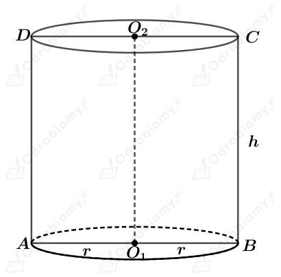
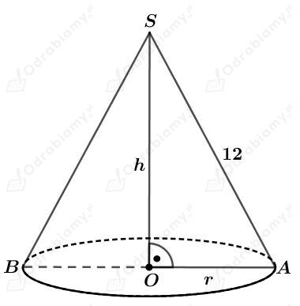
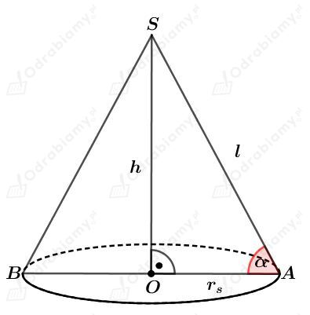
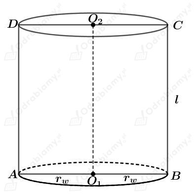
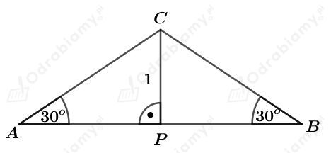
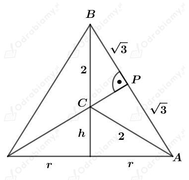
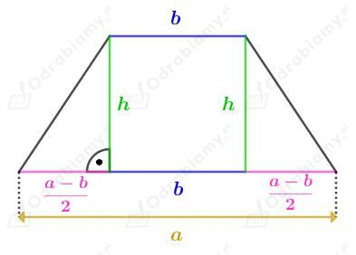
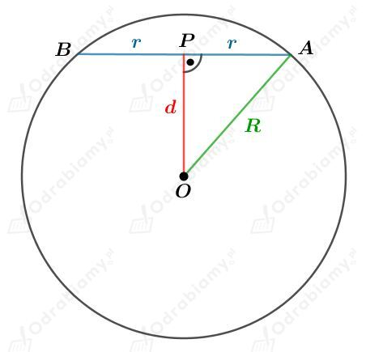
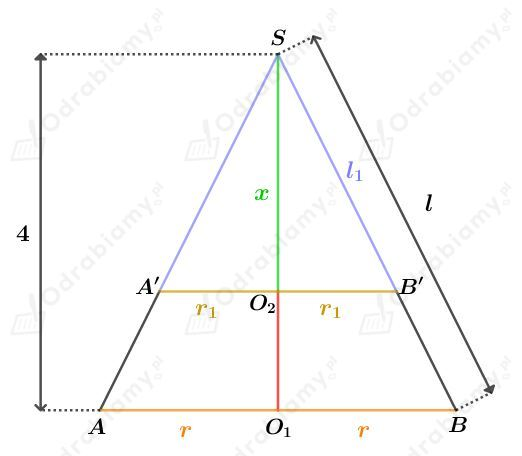

Dane są dwa walce o takiej samej wysokości h.
Promień podstawy drugiego walca ma długość r. Promień podstawy pierwszego walca jest o 50% dłuższy od promienia podstawy drugiego, czyli wynosi 1,5r.
Wyznaczmy objętość pierwszego walca. Mamy:
Wyznaczmy objętość drugiego walca. Mamy:
Wyznaczmy stosunek objętości tych walców. Mamy:
Dana jest metalowa rura, której objętość wyznaczymy jako różnicę objętości Vc całego walca i objętości Vś pustego środka (również w kształcie walca).
Wyznaczmy wspomniane objętości. Mamy:
oraz
Wyznaczmy objętość tej rury. Mamy:
Rysunek:

Powierzchnia boczna po rozwinięciu jest prostokątem o wymiarach 7 cm x 5 cm.
Przypadek I
Wysokość tego walca ma długość 7 cm.
Długość koła będącego podstawą tego walca wynosi 5 cm, zatem:
Wyznaczmy pole przekroju osiowego tego walca. Mamy:
Przypadek II
Wysokość tego walca ma długość 5 cm.
Długość koła będącego podstawą tego walca wynosi 7 cm, zatem:
Wyznaczmy pole przekroju osiowego tego walca. Mamy:
Rysunek:

Powierzchnia boczna po rozwinięciu jest wycinkiem koła wyznaczonym przez kąt środkowy 225o. Mamy zatem:
Korzystając z twierdzenia Pitagorasa dla trójkąta OAS mamy:
Wyznaczmy objętość tego stożka. Mamy:
Wycinek koła o promieniu długości 2 wyznaczony przez kąt środkowy o mierze 90o zwinięto w powierzchnię boczną stożka.
Niech r będzie promieniem podstawy stożka. Mamy zatem:
Skoro stożek ten otrzymano przez zwinięcie wycinka koła o promieniu długości 2, to tworząca tego stożka ma długość 2.
Wyznaczmy pole powierzchni całkowitej tego stożka. Mamy:
Rysunki:

Stożek i walec mają równe pola powierzchni bocznych. Mamy stąd:
Stożek i walec mają równe objętości. Mamy stąd:
Korzystając z twierdzenia Pitagorasa dla trójkąta OAS mamy:
Zatem
Wyznaczmy tangens kąta 𝛼. Mamy:
Rysunek:

Korzystając ze związku między długościami boków w trójkącie o kątach 30o, 60o, 90o mamy:
oraz
a)
Podany trójkąt obracamy wokół jego podstawy.
Wyznaczmy objętość tak powstałej bryły. Mamy:
Wyznaczmy pole powierzchni tej bryły. Mamy:
b)
Trójkąt ABC obracamy wokół jednego z jego ramion.
Rysunek:

Korzystając z pola trójkąta ABC otrzymujemy:
Wyznaczmy objętość otrzymanej bryły. Mamy:
Wyznaczmy pole powierzchni tej bryły. Mamy:
Rysunek:

Podany trapez obracamy wokół dłuższej podstawy. Wyznaczmy objętość tak powstałej bryły. Mamy:
Podany trapez obracamy wokół krótszej podstawy. Wyznaczmy objętość tak powstałej bryły. Mamy:
Z treści zadania wiemy, że
czyli mamy:
Dana jest kula o środku w punkcie O i promieniu długości R.
Podaną kulę przecięto płaszczyzną i otrzymano w przekroju koło o środku w punkcie S i promieniu długości r.
Rysunek:

Wiedząc, że pole powierzchni kuli jest równe 20𝜋 mamy:
Wiedząc, że obwód przekroju będącego kołem jest równy 2𝜋 mamy:
Korzystając z twierdzenia Pitagorasa dla trójkąta OAP mamy:
Stożek przecięto płaszczyzną równoległą do podstawy.
Rysunek:

Korzystając z podobieństwa trójkątów O2B'S i O1BS mamy:
Płaszczyzna A'B' podzieliła powierzchnię boczną na dwie części o równych polach. Mamy stąd:
Korzystając z podobieństwa trójkątów O2B'S i O1BS mamy:
Mamy zatem:
Wyznaczmy szukaną długość odcinka O1O2. Mamy: